1 전일갑오
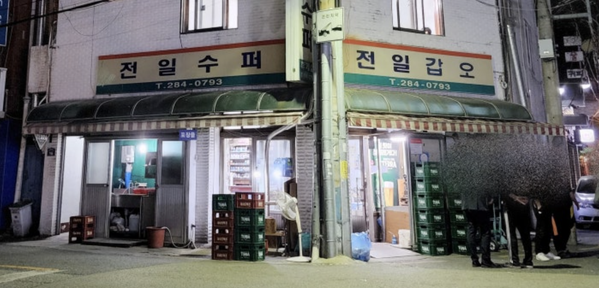
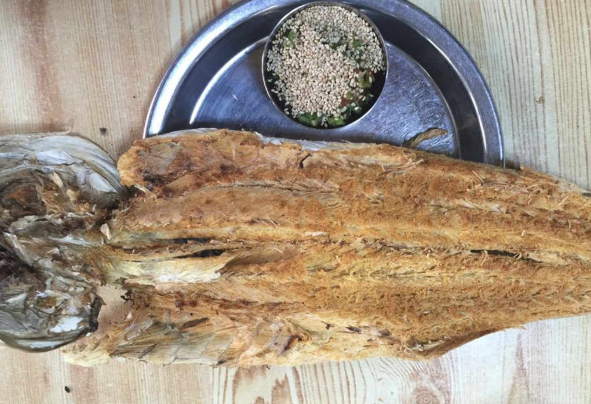
전주가맥의 성지. 통계학회장님 (박병욱 교수님) 오셨을때 대접(?)한다고 간곳. 주차하기 양호해서 가맥먹고싶다면 갈만함. 메뉴는 보통 먹태 많이 먹는데 소스는 청양+마요+데리야끼.. 지금이야 흔한소스인데 당시에 혁신적이라서 그 소스하나로 떴음. 전설로 평가되는 가게인데 개인적으로 맛이 엄청있거나하진 않았음. 원래 가맥집이 그냥 맛은 고만고만함. 감성으로 가는곳이라.. 갑오징어 구이는 맛있었음.
2 무궁화
https://blog.naver.com/insk7431/223501626907
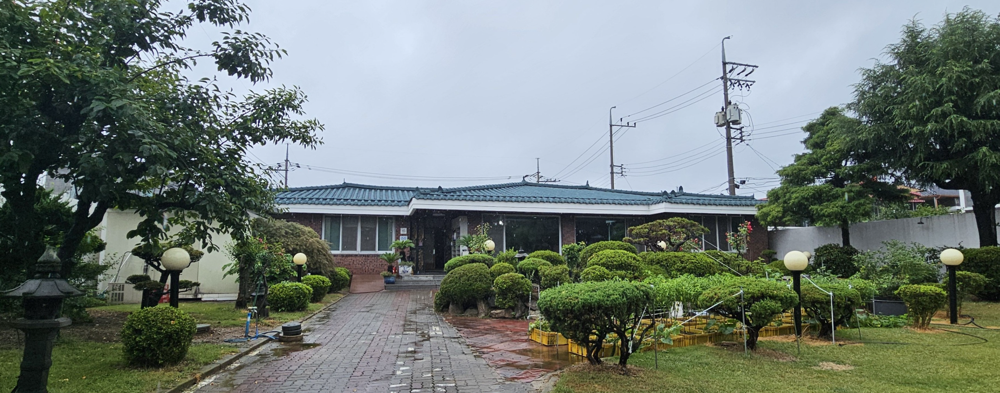
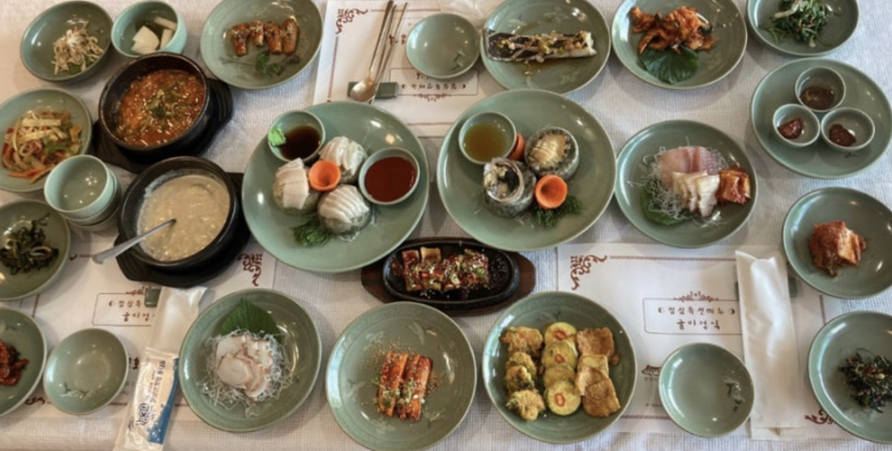
한정식. 예전에 검사장이 지내던 관사를 식당으로 개조함. 식당자체가 예쁨. 아이랑 밥먹기 편함. 아빠 칠순한곳. 한정식의 정석. 음식이 예쁨. 음식은 대체적으로 맛있고 먹을만함. 특별히 너무 맛있어서 기억에 남는 음식은 없었음. (난 보리굴비 얻어 먹으러 몇번감)
3 옴팡집
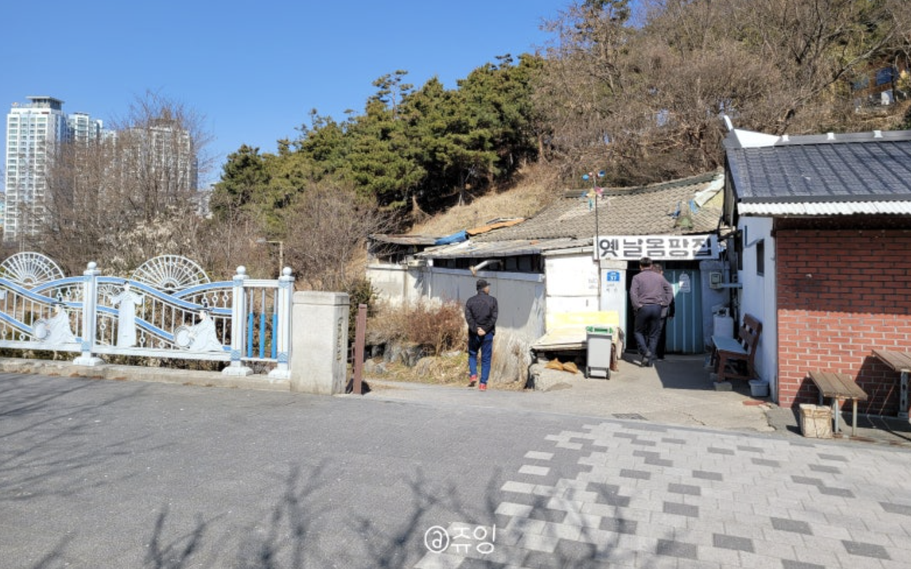
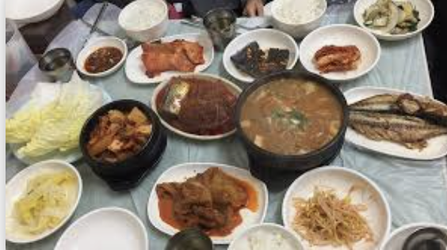
백반집. 덕진공원안에 있는 허름한 식당. 웨이팅 많고 재료소진시 장사안해서 운좋아야 먹을수있음. 음식은 꽤 맛있음. 가성비가 좋음.. 문열려있고 먹을수 있으면 난 무조건 감.
4 호림이네
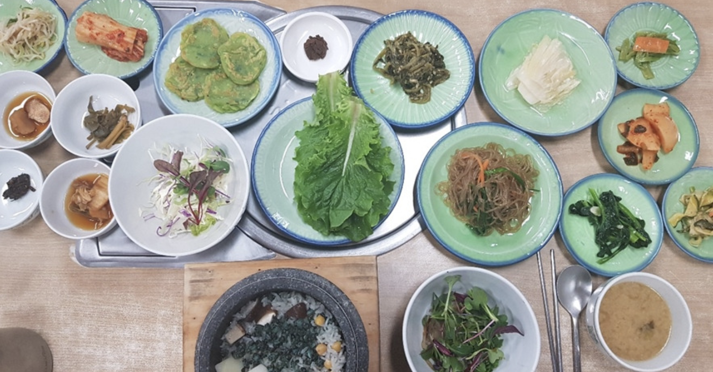
저번에 같이 백숙먹은곳. 음식이 다 맛있음. 반찬들이 다 내 취향임. (장아찌종류좋아해서) 다슬기돌솥밥,백숙, 닭도리탕 다 맛있음.
5 묵향
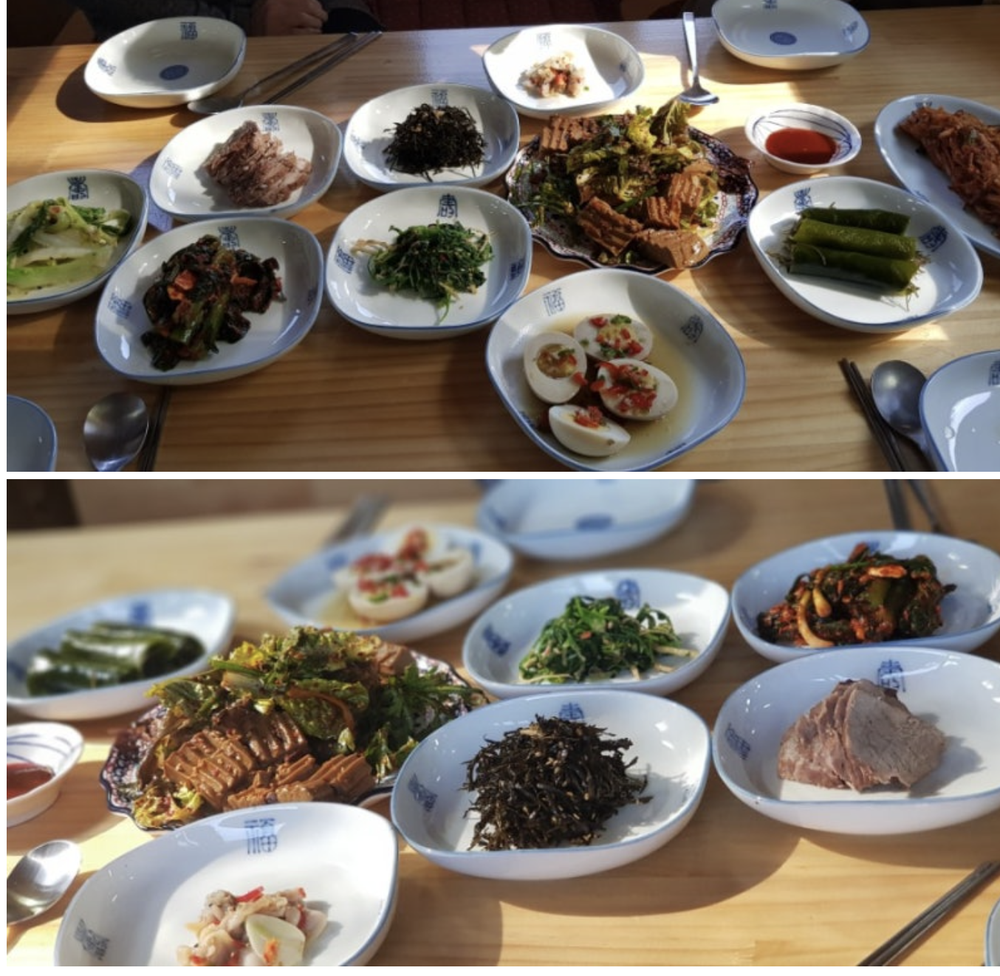
한정식. 음식 꽤 맛있는편임. 호림이네랑 비슷하게 좋아함.. 현지인추천맛집으로 많이 뜨는 가게.. 당연한것이 현지인 아니면 먹기가 힘듦 (4번시도해서 2번먹음, 예약이 어려움)
6 베테랑칼국수
전주맛집으로 꼭 뜨는곳. 일반적인 칼국수가 아니고 달걀을 푼 특이한 칼국수. 매우 독특함. 나는 여기보다 금암면옥을 더 좋아해서 여기서 안먹음.. 주차가 거의 불가능함. 먹고싶다면 택시타고 갔다오는게 속편한듯
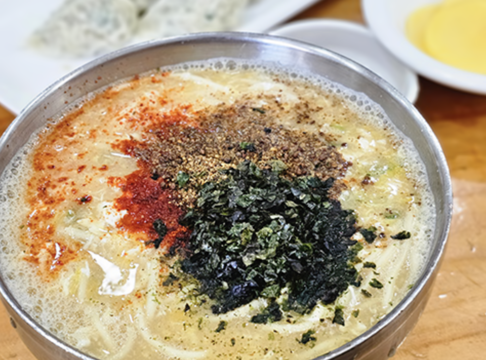
7 고산미소한우
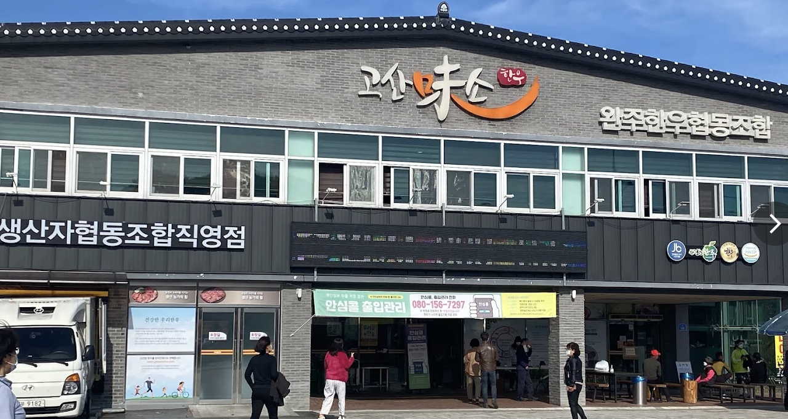
정육식당.. 그냥 괜찮음.. 질좋은 소고기 많이 먹고싶으면 갈만함. 아침에 일어나면 갈비탕을 먹을수 있는데 그게 맛있음
8 현대옥
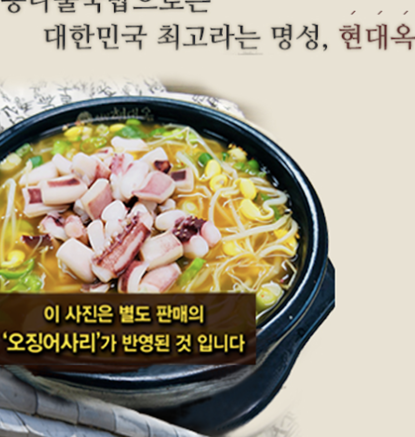
전주맛집에 꼭 나옴.. 그냥 엄청나게 맛있는건 아니고 꽤 괜찮은 콩나물국밥정도? 주차가 거의 불가능함
9 양반가
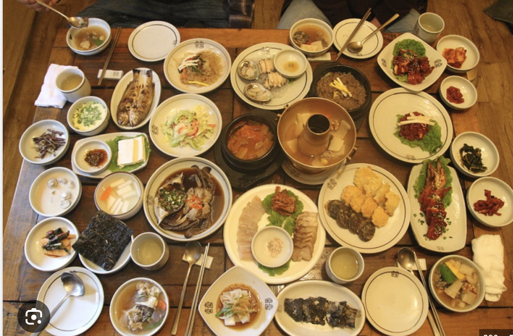
전주에서 가장 유명한 한정식집. 한옥마을 안에 있음. 맛은있지만 나는 개인적으로 호림이네와 묵향을 더 선호함. 여긴 통계학회장님 오셨을때도 갔었고 상견례때도 갔었음.
10 섬마을
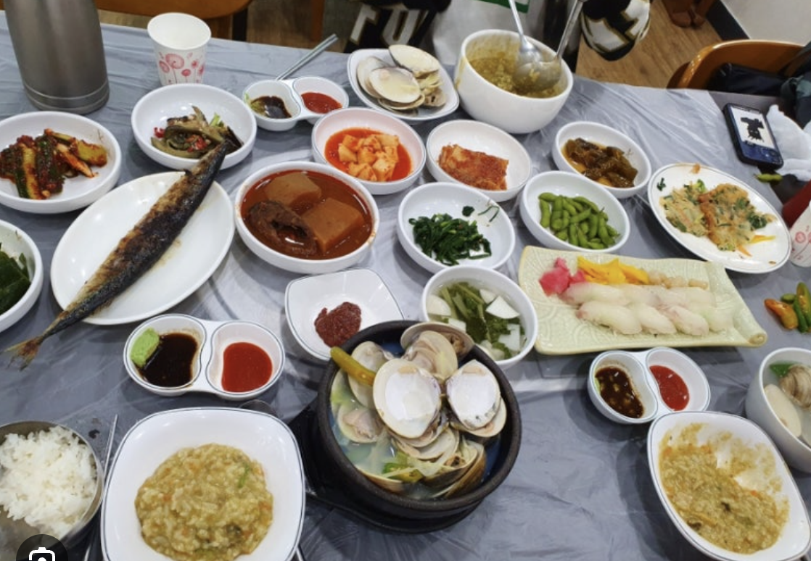
내 최애 횟집.. 봄에는 쭈꾸미,갑오징어 여름에는 민어,하모, 겨울에는 새조개 등 제철음식이 정말 일품. 백합탕도 맛있음. 음식 다 맛있음. 지금 가면 갑오징어회먹을수있을듯
11 성미당
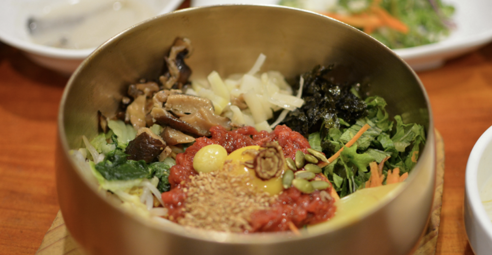
개인적으로 좋아하는 비빔밥집.. 맛있고 음식이 빨리나와서 좋음. 여기 육회사시미도 술먹기 아주 좋음.. 근데 하숙영등 다른 비빔밥집도 맛있는곳 많음.